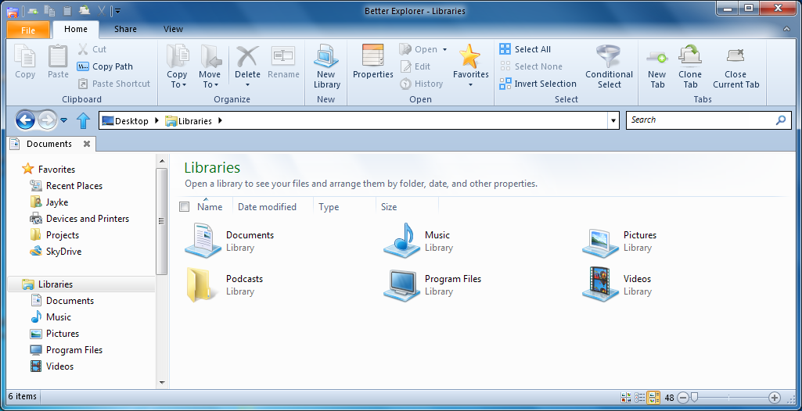

What is BetterExplorer?
BetterExplorer was made by Dimitar Tsenev as a replacement for Windows Explorer, adding new features such as tabs. He later added the Ribbon interface, and, in February 2012, had Jayke Huempfner join the project, and together they've continued to work on BetterExplorer.
We released our first beta on June 1, 2012. We've made updates since then (and squashed a really annoying bug), but it's still worth a look! We're always making updates to our product, so come back often!
If you ever have a comment, question, or issue, let us know at https://github.com/DimitarCC/BetterExplorer/issues.
This program is open-source, so anyone is free to use it and edit it.
We are not accepting donations.
Current Features
BetterExplorer Beta 1 has all of the features of Windows Explorer, as well as:
- Ribbon interface
- Tabs
- Image Editing tools
- Support for most major archive formats
- Conditional Select
- Search tools
Features to be added
IFeatures we'll be adding in the Beta 1 Update include:
- Support for multiple windows
- Size Charts
- Action Log